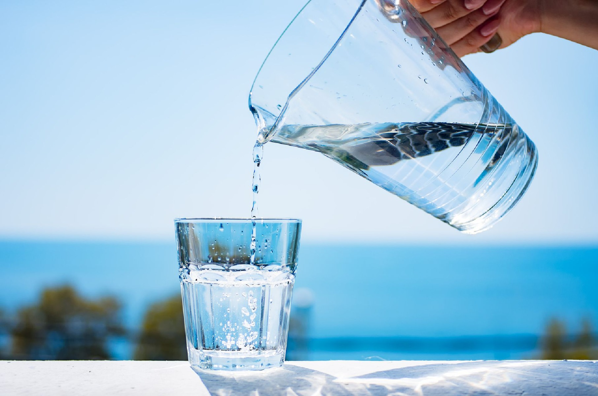

SOBRE NÓS ESCREVE AI
A escassez da água
A escassez de água no mundo é agravada em virtude da desigualdade social e da falta de usos sustentáveis dos recursos naturais. De acordo com os números apresentados pela ONU – Organização das Nações Unidas – fica claro que controlar o uso da água significa deter poder.
As diferenças registradas entre os países desenvolvidos e os em desenvolvimento chocam e evidenciam que a crise mundial dos recursos hídricos está diretamente ligada às desigualdades sociais.
Em regiões onde a situação de falta d’água já atinge índices críticos de disponibilidade, como nos países do Continente Africano, onde a média de consumo de água por pessoa é de dezenove metros cúbicos/dia, ou de dez a quinze litros/pessoa. Já em Nova York, há um consumo exagerado de água doce tratada e potável, onde um cidadão chega a gastar dois mil litros/dia.
Se os governos dos países carentes de água não adotarem medidas urgentes para estabilizar a população e elevar a produtividade hídrica, a escassez de água em pouco tempo se transformará em falta de alimentos.
Como isso afeta?
A cada ano, mais 80 milhões de pessoas clamam por seu direito aos recursos hídricos da Terra. Infelizmente, quase todos os 3 bilhões (ou mais) de habitantes que devem ser adicionados à população mundial no próximo meio século nascerão em países que já sofrem de escassez de água.
Já nos dias de hoje, muitas pessoas nesses países carecem do líquido para beber, satisfazer suas necessidades higiênicas e produzir alimentos.
Numa economia mundial cada vez mais integrada, a escassez de água cruza fronteiras, podendo ser citado com exemplo o comércio internacional de grãos, onde são necessárias 1.000 toneladas de água para produzir 1 tonelada de grãos, sendo a importação de grãos a maneira mais eficiente para os países com déficit hídrico importarem água.